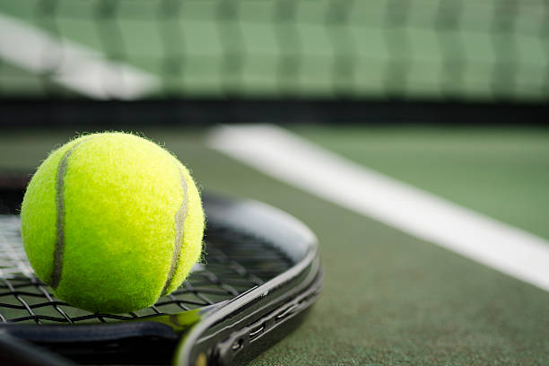
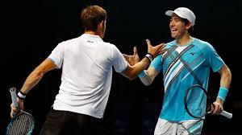

Tennis is a game played on a rectangular-shaped court, which can be one of many surfaces. It is either played with two players (singles match), or four players (doubles match). Players stand on opposite sides of the net and use a stringed racquet to hit the ball back and forth to each other.
Each player or team has a maximum of one bounce after the ball has been hit by their opponent to return the ball over the net and within the boundaries of the court. In wheelchair tennis, players get a maximum of two bounces. When a player then fails to return the ball into the correct court, the opponent wins a point. The aim of tennis is to win enough points to win a game, enough games to win a set, and enough sets to win a match. |
Before warming up with your opponent, either player or team will spin their racquet and the winner of the spin will have some options to choose from. They can choose one of these 3 options:
Once the winner of the toss chooses one of the options above, the opponent has the remaining choice.
POINT SYSTEMTennis has a different point system than most sports. Before we go into detail, here is your guide to scoring a game:
|
 |
|  | In order to win the game, a player must win at least four points. If you are up 40-30, 40-15 or 40-love, and win one more point, you win the game. If the score is tied in a game or set, you use the term “all” when announcing the score. For example, if you and your opponent have both won two points in the game, the score would be 30-all. |
The only time this is different is when both you and your opponent have won three points each and the score is 40-40. This is called deuce. When the score reaches deuce, one player or team will need to win at least two points in a row to win the game. When the server wins the deuce point, it is called Ad-In, but when they lose the deuce point, it is called Ad-Out. If the team with the advantage (Ad-In or Ad-Out) wins another point, they win the game, or it goes back to deuce.
Now let’s look at how many games you need to win a set. There are two main ways of scoring a set.
ADVANTAGE SETIn an advantage set, a player or team needs to win six games, by two, to win the set. This means that there is no tiebreak game played at 6-6. The set continues until one player/team wins by two games. | TIEBREAK SETIn a tiebreak set, a player or team needs to win six games wins a set. If the score gets to 5-5 (5-all), one player must win the next two games to win the set. If the score reaches 6-6 (6-all) in the set, a tiebreak game is played. |